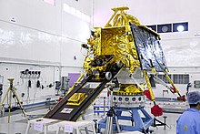
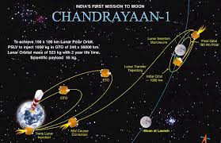

The Indian Space Research Organisation (ISRO, /ˈɪsroʊ/; Hindi: Bhārtīya
Antrikṣa Anusandhān Saṅgaṭhan) is the space agency of the Government of
India and has its headquarters in the city of Bangalore (also known as
Bengaluru). Its vision is to "harness space technology for national
development while pursuing space science research & planetary
exploration".[6] The Indian National Committee for Space Research
(INCOSPAR) was established by Jawaharlal Nehru under the Department of
Atomic Energy (DAE) in 1962, with the urging of scientist Vikram
Sarabhai recognising the need in space research. INCOSPAR grew and
became ISRO in 1969, also under the DAE. In 1972, the Government of
India had set up a Space Commission and the Department of Space (DOS),
bringing ISRO under the DOS. The establishment of ISRO thus
institutionalised space research activities in India. It is managed by
the DOS, which reports to the Prime Minister of India
FORMATIVE YEARS

Future plans include development of the Unified Launch Vehicle, Small Satellite Launch Vehicle, development of a reusable launch vehicle, human spaceflight, a space station, interplanetary probes, and a solar spacecraft mission.